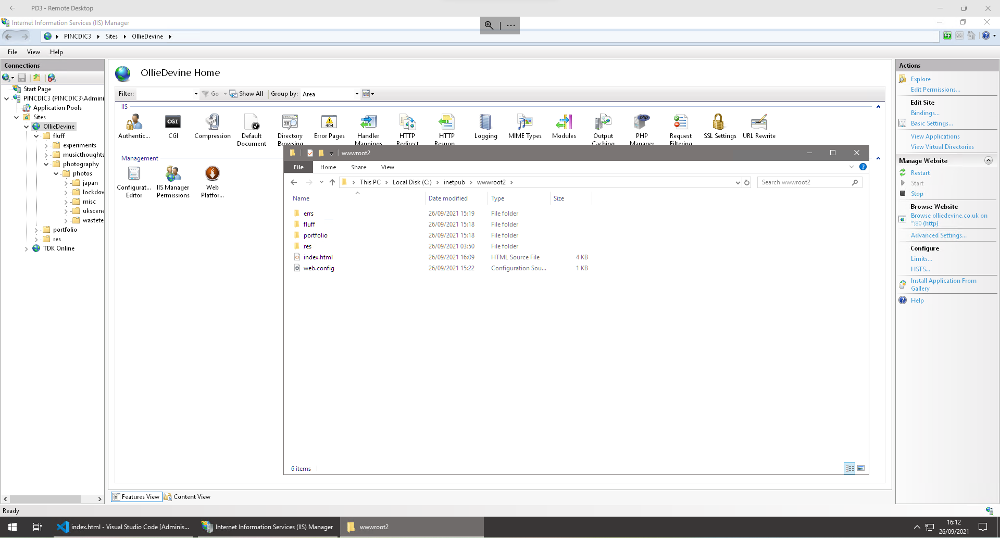
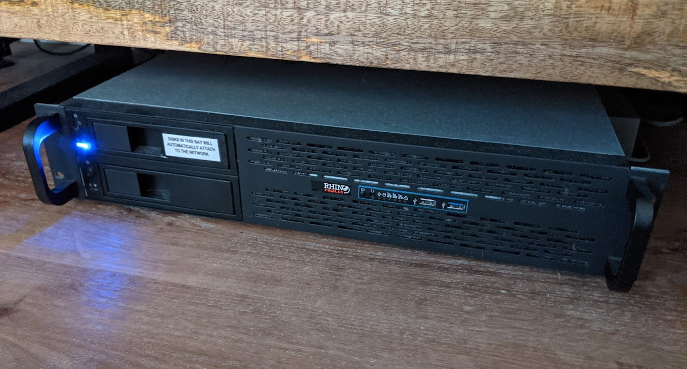

This website, a personal passion-project, serves as a base for everything I output. On here you can find everything I do (at least, everything I do that's worthwhile).
The entire website is 100% DIY:
This website helps me practice new web technologies as I learn them and serves as a perpetually evolving demonstration of my capabilities to create content on the world wide web. It also provides a creative outlet; I have put care, attention and effort into the aesthetics and functionality of the website, and I also use the website to display some of my other work and work by others that I enjoy.
 